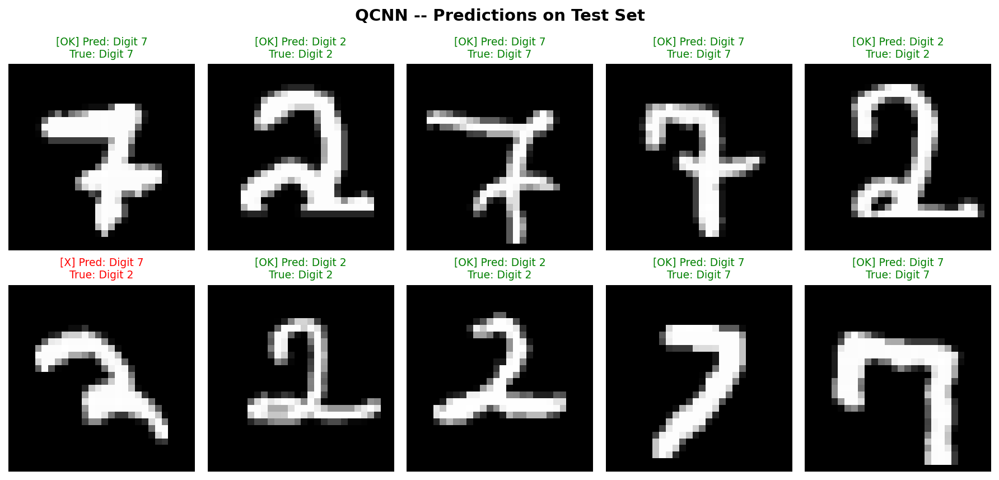

Benchmarking 5 quantum algorithms for binary MNIST classification (Digit 2 vs 7) using PCA feature reduction & PennyLane quantum circuits on simulated NISQ hardware.
Understanding what this project is, why it matters, and what problems it solves.
This project benchmarks five Variational Quantum Machine Learning (VQML) algorithms on the task of classifying handwritten digits from the famous MNIST dataset. Specifically, we classify digit "2" versus digit "7" — a binary classification problem — using quantum circuits simulated on classical hardware.
Classical machine learning has reached remarkable performance, but quantum computers promise exponential speedups for certain problems by exploiting quantum phenomena like superposition and entanglement. This project explores whether today's noisy, small-scale quantum devices (called NISQ devices) can already perform useful classification tasks.
NISQ stands for Noisy Intermediate-Scale Quantum — referring to current quantum computers with 50–1000 qubits that are prone to errors. Rather than waiting for fault-tolerant quantum computers, variational algorithms are designed to work within these limitations by combining quantum circuits with classical optimization.
Classifying digit 2 vs 7 from the MNIST dataset — a well-understood benchmark problem.
Quantum circuits process data while a classical optimizer (Adam) tunes the circuit parameters.
QNN, QCNN, VQC, VQFE, and QSVM — each with unique quantum circuit architectures.
Measured with Accuracy, Precision, Recall, and F1-Score for real-world relevance.
A step-by-step walkthrough of the complete pipeline — from raw image to quantum classification.
Download the MNIST dataset containing 70,000 handwritten digits (28×28 grayscale images). We only keep digits 2 and 7 for binary classification.
Filter out all digits except 2 and 7. Relabel them: Digit 2 → Class 0, Digit 7 → Class 1. This turns it into a clean binary classification problem.
Quantum computers can only handle a few qubits. PCA (Principal Component Analysis) compresses each 784-dimensional image down to just 4 principal components, retaining the most important patterns while fitting our 4-qubit circuit.
The 4 PCA components are normalized to the range [0, π] and used as rotation angles to encode classical data into quantum states. Each component maps to one qubit via an RX rotation gate.
This is the heart of the algorithm. A variational quantum circuit with trainable parameters processes the encoded data. Each algorithm uses a different circuit architecture (different gates, entanglement patterns, and layer structures).
The quantum circuit's output is measured using the Pauli-Z operator on qubit 0. This gives a value between -1 and +1. If the value is greater than 0, we predict class 1 (digit 7); otherwise, class 0 (digit 2).
The quantum circuit parameters are updated by a classical Adam optimizer using PyTorch's autograd. The loss function is Mean Squared Error between the circuit output and the target labels (±1). This hybrid quantum-classical loop repeats for 20 epochs.
Click any card to explore the quantum circuit architecture, gate operations, and key specifications.
Quantum Neural Network
The simplest variational approach. Uses AngleEmbedding (RX rotations per qubit) followed by 3 layers of BasicEntanglerLayers — parameterized single-qubit rotations and nearest-neighbor CNOTs. Output is the expectation value of PauliZ on qubit 0.
@qml.qnode(dev)
def circuit(inputs, weights):
qml.AngleEmbedding(inputs, wires=range(4))
qml.BasicEntanglerLayers(weights, wires=range(4))
return qml.expval(qml.PauliZ(0))Quantum Convolutional Neural Network
Mimics classical CNNs with conv-like layers (pairs of RX/RY gates + CNOT entangling) and a pooling-like layer (Rot gate on qubit 0). Reduces feature information hierarchically like spatial pooling.
@qml.qnode(dev)
def circuit(inputs, weights):
qml.AngleEmbedding(inputs, wires=range(4))
for i in range(0, 4, 2):
qml.RX(weights[0][0], wires=i)
qml.RY(weights[0][1], wires=i+1)
qml.CNOT(wires=[i, i+1])
qml.Rot(*weights[1], wires=0)
return qml.expval(qml.PauliZ(0))Variational Quantum Classifier
The most expressive variational ansatz. Uses StronglyEntanglingLayers with 3 rotation parameters per qubit per layer (Rot gates) and long-range CNOT entanglement patterns for maximal expressivity.
@qml.qnode(dev)
def circuit(inputs, weights):
qml.AngleEmbedding(inputs, wires=range(4))
qml.StronglyEntanglingLayers(weights, wires=range(4))
return qml.expval(qml.PauliZ(0))Variational Quantum Feature Embedding
Unique approach with trainable feature embedding — RY rotations with learnable scaling weights that adapt encoding per qubit. Followed by 3 layers of BasicEntanglerLayers for processing.
@qml.qnode(dev)
def circuit(inputs, weights):
for i in range(4):
qml.RY(inputs[i] * weights[0][i], wires=i)
qml.BasicEntanglerLayers(weights[1:], wires=range(4))
return qml.expval(qml.PauliZ(0))Quantum Support Vector Machine
Kernel-based approach: computes a quantum fidelity kernel |⟨φ(x₁)|φ(x₂)⟩|² using AngleEmbedding + adjoint. The kernel matrix feeds a classical SVC. Uses smaller subsets due to O(n²) kernel computation.
@qml.qnode(dev)
def kernel_circuit(x1, x2):
qml.AngleEmbedding(x1, wires=range(4))
qml.adjoint(qml.AngleEmbedding)(x2, wires=range(4))
return qml.probs(wires=range(4))Detailed per-algorithm metrics showing how each quantum algorithm performs on the classification task.
QNN predicts all samples as class 1 (digit 7), resulting in perfect recall but poor precision and near-random accuracy. The simplest architecture struggles to learn meaningful decision boundaries.
QCNN achieves 90% accuracy with well-balanced metrics. The convolutional structure hierarchically processes features, similar to how classical CNNs excel at image tasks. A top performer.
VQC achieves the highest F1-Score (91%) and the best overall balance. StronglyEntanglingLayers provide maximum circuit expressivity with long-range entanglement, enabling it to capture complex patterns.
VQFE has high recall (95%) but struggles with precision. The trainable feature embedding adds flexibility but may also introduce noise. It tends to over-predict class 1 (digit 7).
QSVM takes a fundamentally different approach using a quantum kernel with a classical SVM classifier. Limited by its small training subset (40 samples) due to O(n²) kernel computation complexity.
Interactive comparison of all 5 algorithms across key classification metrics.
What we learned from benchmarking these 5 variational quantum algorithms.
The Variational Quantum Classifier with StronglyEntanglingLayers achieves the highest F1-Score (91%) and best accuracy (90%), demonstrating that circuit expressivity is crucial for classification performance.
The convolutional approach achieves 90% accuracy with significantly fewer parameters. Its hierarchical structure (inspired by classical CNNs) is well-suited for the spatial patterns in digit images.
The simplest architecture (BasicEntanglerLayers only) achieves only 52% accuracy — essentially random guessing. This shows that circuit depth and design matter significantly.
QSVM (kernel-based) reaches 80% accuracy but is limited by O(n²) kernel computation, requiring only 40 training samples. Variational methods scale better with data.
QNN and VQFE achieve near-perfect recall (95–100%) but low precision, meaning they over-predict class 1. This highlights a common failure mode in underfitting quantum circuits.
Results suggest that more expressive circuits (more layers, diverse gates) and larger training sets could further improve performance on NISQ devices as hardware matures.
Visual results from each algorithm on the MNIST test set. Click any image for a detailed view.

Draw a digit (2 or 7) in the canvas below and see simulated quantum classification results!
Draw a digit and click classify to see results
Key terms explained — perfect for anyone new to quantum computing and quantum machine learning.
The basic unit of quantum information. Unlike a classical bit (0 or 1), a qubit can exist in a superposition of both states simultaneously. In this project, we use 4 qubits to encode 4 PCA features.
A quantum property where a qubit exists in multiple states at once (both 0 and 1). This allows quantum computers to process many possibilities simultaneously, providing potential computational advantages.
A quantum phenomenon where two or more qubits become correlated — measuring one instantly determines the state of others. CNOT gates in our circuits create entanglement, enabling complex data relationships.
A quantum circuit with trainable parameters (rotation angles) that are optimized by a classical algorithm. This hybrid approach is designed for today's noisy quantum hardware (NISQ devices).
Noisy Intermediate-Scale Quantum — refers to current quantum devices with 50–1000 qubits that suffer from noise and limited coherence times. Variational algorithms are specifically designed to operate within these constraints.
An observable that measures a qubit along the Z-axis of the Bloch sphere. It returns an expectation value between -1 and +1. In our project, values > 0 are classified as digit 7, values ≤ 0 as digit 2.
A classical dimensionality reduction technique. It finds the directions of maximum variance in data and projects it onto fewer dimensions. We reduce 784-pixel images to 4 principal components to fit our 4-qubit circuit.
A method to encode classical data into quantum states by using data values as rotation angles for quantum gates (e.g., RX, RY). Each feature value rotates one qubit, mapping classical information into the quantum Hilbert space.
A similarity measure computed using a quantum circuit. The fidelity kernel |⟨φ(x₁)|φ(x₂)⟩|² computes the overlap between two quantum states — the more similar the data, the higher the overlap. Used by QSVM.
The harmonic mean of Precision and Recall: F1 = 2 × (Precision × Recall) / (Precision + Recall). It provides a single balanced metric, especially useful when classes are imbalanced. Values range from 0 (worst) to 1 (perfect).
Expand each section for in-depth information about the benchmark configuration.
| Training Samples | 1,000 |
| Test Samples | 250 |
| Number of Qubits | 4 |
| Training Epochs | 20 |
| Learning Rate | 0.1 (Adam) |
| Quantum Device | default.qubit (PennyLane) |
| QSVM Train Subset | 40 |
| QSVM Test Subset | 20 |
pennylaneQuantum circuit frameworktorchNeural network & autogradtorchvisionMNIST dataset loaderscikit-learnPCA, SVC, metricsnumpyNumerical operationsmatplotlibPrediction visualizationjoblibQSVM model persistence